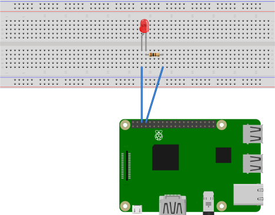
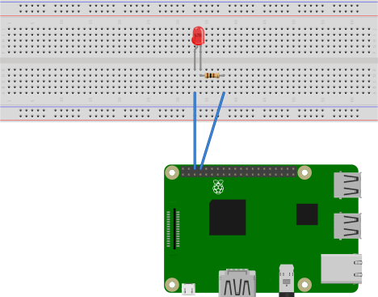

Esercitazioni
Nella seguente sezione parleremo delle esercitazioni svolte durante il corso coding4math. Prima di proseguire, consigliamo però di esercitare le vostre abilità col linguaggio Python misurandovi con gli esercizi di bassa e media difficoltà reperibili presso la piattaforma w3resource.
Plot di un istogramma
In questa prima esercitazione, ci siamo occupati di scrivere un programma che, dato in input un vettore di numeri interi positivi, restituisse in output un istogramma di tale vettore e l'indice in cui viene raggiunto il suo valore massimo. All'interno del programma abbiamo gestito i possibili errori, definito la funzione che si occupa di plottare l'istogramma e la funzione che determina il valore massimo e l'indice in cui viene raggiunto. Nel seguente script è presentato il risultato di tale esercitazione.
"""
Questo script ha il fine di disegnare l'istogramma di una lista di numeri interi positivi e,
al contempo, di determinare il suo valore massimo e il primo indice in cui viene raggiunto.
"""
def positive_integer(vector):
"""
Questa funzione ha come parametro una lista, e si occupa di
verificare che i suoi elementi siano interi positivi.
"""
for val in vector:
if (not isinstance(val, int)) or val <= 0:
raise ValueError('[ERRORE] Il parametro di input deve essere composto ' +
'da numeri interi positivi.')
def real_number(vector):
"""
Questa funzione ha come parametro una lista, e si occupa di
verificare che i suoi elementi siano numeri reali.
"""
for val in vector:
if not isinstance(val, (int, float)):
raise ValueError('[ERRORE] Il parametro di input deve essere composto da numeri reali.')
def plot(vector):
"""
Questa funzione ha come parametro una lista di numeri interi positivi,
e serve a disegnarne il relativo istogramma sul prompt.
"""
try:
positive_integer(vector)
except ValueError as error:
print("[ERRORE] Non è possibile disegnare l'istogramma.")
print(error)
else:
char = '*'
i = 0
for val in vector:
print('vector[{0}]: '.format(i) + char*val)
i = i + 1
def maximize(vector):
"""
Questa funzione ha come parametro una lista di numeri interi positivi,
e serve ha trovarne il valore massimo e il primo indice cui appartiene.
"""
try:
real_number(vector)
except ValueError as error:
print("[ERRORE] Non è possibile calcolare il massimo.")
print(error)
[argmax, max_] = [None, None]
else:
argmax = 0
max_ = 0
i = 0
for val in vector:
if val > max_:
argmax = i
max_ = val
i = i + 1
return [argmax, max_]
if __name__ == '__main__':
# scegliamo un vettore
vector = [5, 9, 3, 4]
# plottiamo l'istogramma del vettore considerato
plot(vector)
# determiniamo il massimo del vettore considerato
[argmax, max_] = maximize(vector)
# stampiamo il risultato
if argmax != None and max_ != None:
print('argmax: {0}'.format(argmax))
print('max_: {0}'.format(max_))
Gestione di una rubrica
In questa esercitazione abbiamo invece realizzato una interfaccia da linea di comando che si occupa di gestire una rubrica telefonica. La rubrica viene immagazzinata in un'opportuno file
.json che viene modificato sulla base delle azioni richieste. Si tratta nella fattispecie di un rudimentale esempio di programma CRUD (Create, Read, Update, Delete). Durante la fase di sviluppo, diversamente dall'esercitazione precedente, abbiamo suddiviso la logica dell'applicazione in diversi moduli, ciascuno avente compiti diversi:
- un modulo per la lettura e la scrittura sul file di rubrica;
- un modulo per le operazioni CRUD;
- un modulo per la gestione degli errori;
- un modulo per lanciare l'esecuzione del programma.
Visualizzazione di dati meteo
Oggetto di questa esercitazione è stata la rappresentazione di dati ottenuti attraverso le cosiddette chiamate a servizi REST API. Nella fattispecie, iscrivendoci al sito Weatherbit, abbiamo ricavato una API KEY che ci ha consentito di usufruire dei servizi messi a disposizione dalla piattaforma. In particolare, abbiamo ricavato le previsioni meteo a 16 giorni seguendo la sintassi prevista dalla relativa chiamata REST API, così come riportata nella documentazione. Più nel dettaglio abbiamo estratto, dai dati ricavati, le temperature minime e massime previste nei successivi 16 giorni in una data locazione geografica, per poi plottarle in un grafico. Il codice che implementa tale funzionalità è di seguito riportato.
from urllib.request import urlopen
import json
import matplotlib.pyplot as plt
import numpy as np
"""
16 days forecast api-endpoint (see https://www.weatherbit.io/api/weather-forecast-16-day)
example:
https://api.weatherbit.io/v2.0/forecast/daily?postal_code=72015&country=IT&key=a2e592329c9549dc8906aa5b9e84fc3b
"""
url_base = 'https://api.weatherbit.io/v2.0/forecast/daily?'
postal_code = '72100' # Brindisi
country = 'IT' # Italia
key = 'a2e592329c9549dc8906aa5b9e84fc3b'
url = url_base + 'postal_code=' + postal_code \
+ '&country=' + country \
+ '&key=' + key
# try to open the url
try:
data = json.loads(urlopen(url).read().decode('utf-8'))
# if no data are given in the response, print the exception raised
except Exception as error:
print(error)
# otherwise, parse the data contained in the response, and plot them
else:
# plot minimum and maximum temperature as function of days
day = np.zeros((len(data['data']),1))
temperature = np.zeros((len(data['data']),2))
for i in range(0,len(data['data'])):
day[i] = i
temperature[i][0] = data['data'][i]['min_temp']
temperature[i][1] = data['data'][i]['max_temp']
fig, ax = plt.subplots()
ax.plot(day, temperature[:,0])
ax.plot(day, temperature[:,1])
ax.set(xlabel='Days',
ylabel='Temperature range',
title= data['city_name'] + ': 16 days weather forecast')
ax.grid()
# show the results
plt.show()
Controllo di un LED
Nell'ambito dell'IoT (Internet of Things) abbiamo infine proposto un'esercitazione in cui, tramite l'ausilio di un Raspberry Pi, abbiamo fatto lampeggiare un LED. Per la realizzazione del progetto abbiamo utilizzato:

Nella realizzazione del circuito si è tenuto conto dello schema associato ai PIN del Raspberry Pi:

Infine, abbiamo caricato sul Raspberry Pi lo script Python che, una volta eseguito, causerà il lampeggiamento del LED:
- un Raspberry Pi 3 (voltaggio 3.3V);
- un normale LED (voltaggio 1.7V e corrente 20mA);
- una resistenza da 100Ω;
- una breadboard;
- due cavi maschio-femmina.

Nella realizzazione del circuito si è tenuto conto dello schema associato ai PIN del Raspberry Pi:
Infine, abbiamo caricato sul Raspberry Pi lo script Python che, una volta eseguito, causerà il lampeggiamento del LED:
import RPi.GPIO as GPIO # Import Raspberry Pi GPIO library
from time import sleep # Import the sleep function from the time module
LedPin = 8 # Set pin 8 to be an output pin
GPIO.setwarnings(False) # Ignore warning for now
GPIO.setmode(GPIO.BOARD) # Use physical pin numbering
GPIO.setup(LedPin, GPIO.OUT, initial=GPIO.LOW) # Set initial value of LedPin to low (off)
try:
while True: # Run forever
GPIO.output(LedPin, GPIO.HIGH) # Turn on
sleep(1) # Sleep for 1 second
GPIO.output(LedPin, GPIO.LOW) # Turn off
sleep(1) # Sleep for 1 second
except KeyboardInterrupt:
GPIO.output(LedPin, GPIO.HIGH)
GPIO.cleanup()